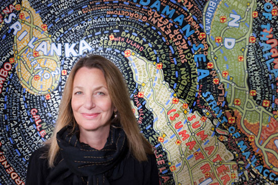
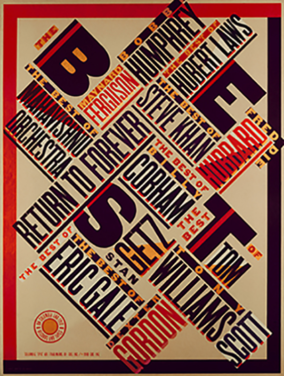
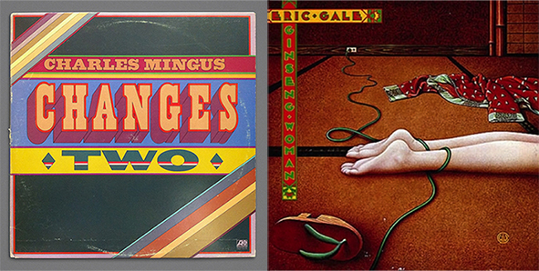
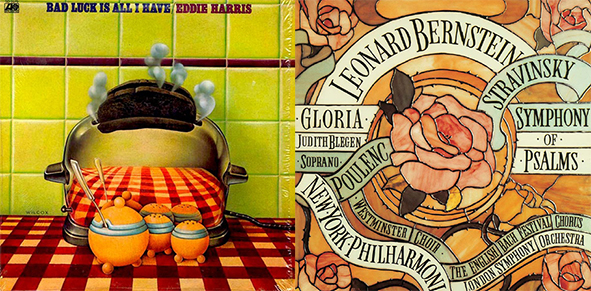
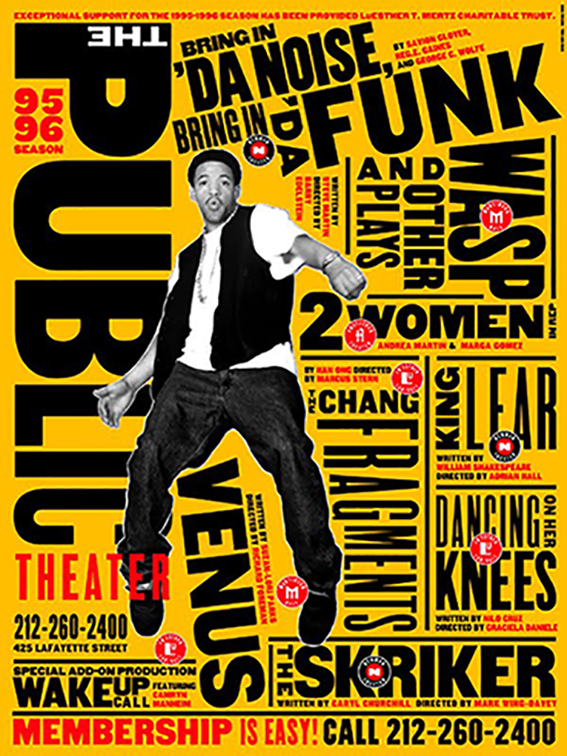
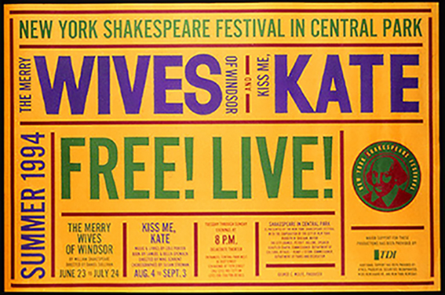
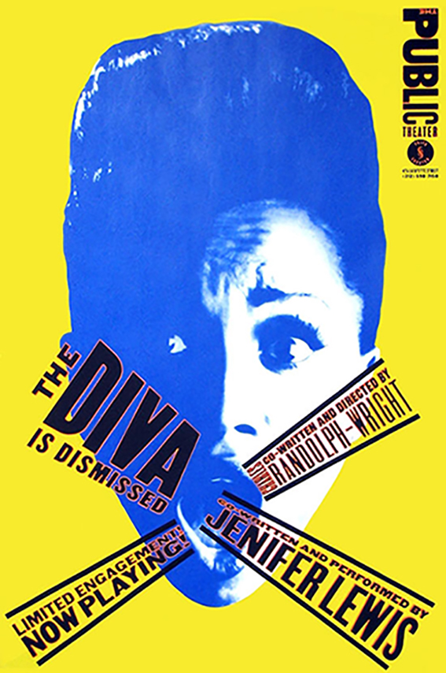
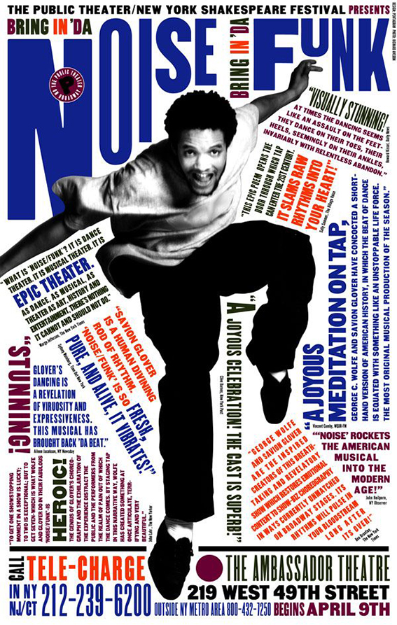

Paula Scher
How She influenced Modern typography and design?
In this essay I plan to explore the title of the essay of how Paula Scher has influenced modern typography and design. I want to expand my knowledge of how her work came to life and not only how she influenced today's typography, but also what she was inspired by before creating her designs. In this essay first of all I want to learn more about Paula Scher's work and life, and how she got to the stage of popularity in the design industry, that she is at right now. Next I plan to discover more about Scher's style of her work and the different techniques she uses for her designs. I plan to get to know where she started. The main focus of this essay is to get to know the works of Paula Scher and how she influenced the design industry.
Getting to know Paula
Paula Scher is an American graphic designer, painter and art educator in design. She was born in Washington, 6th October 1948. Paula has been in the design industry for over forty years now, mainly based in New York. Scher learned Swiss Design principles at the design school she attended. In her school she developed her skills to illustrate with type. She took inspiration from Neville Brody and the New Wave typography. Scher always wanted to create expressionist style of typography. She often refers to the quote “Words have meaning and typography has feeling” (Walters, 2010), and always tries to combine the two together, so her work has a lot of meaning and feeling. Scher also takes influence from her husband, Seymour Chwast who created the Pushpin Studios with Milton Glaser; through his use of Victorian, Art Nouveau and Art Deco forms and illustrative styles to produce unexpected forms in illustration and type. In a way, they balance each other in their method of visual communication, Chwast through illustration and Scher through typography.
Style
Scher’s style show's bold imagery and uses typography in an almost illustrative rather than print style and she continues to this day to push design boundaries and her own. She took a unique approach by mixing different typefaces, modifying letter spacing and combining groups of type of different scale and angle. Her typography is very strong and she uses words that are meaningful and always makes an impact from her pieces. She always uses bold and loud colours, which makes her designs very eye catching with the typography where you cannot walk pass them without looking into the designs. In her designs you can definitely see the link between the bases that she learned of Swiss Design principles with the bold and meaningful type. Her early work was usually made by hand, either drawn, painted, or built because there were no computers for her to work on so her work was more organic. Her early work for the city’s Public Theatre, with its graffiti-like style combined with elements of traditional woodcuts and Victoriana. Her designs involve album records, posters, logos, branding and environmental design.
Work and Career
Paula Scher has moved to New York and in 1972 she was hired by 'CBS Records'. She worked in advertising and promotions department for two years, and then she decided to leave to have a more creative input in design. She started working at competing label 'Atlantic Records', where she started designing her first album covers. After a year of working for them she returned to 'CBS Records'. While working there for eight more years she was credited for designing over 150 album covers. Some of the main covers includes designs for; Boston, Eric Gale, Leonard Bernstein, Bob James, Bob James and Earl Klugh, Roger Dean and David Howells etc. Adding to her success, her designs were recognized with four Grammy nominations. She is also credited with reviving historical typefaces and design styles.
In 1982 she left 'CBS Records' to continue in working on her own as a more independent designer. Paula Scher developed her new typographic solution based on and inspired by Russian constructivism and Art deco. The Russian constructivism has inspired Scher for her typography. She did not copy the early constructivist style but used its vocabulary of form on her works.
1984 was a year when Paula Scher co-founded Koppel & Scher with editorial designer Terry Koppel. During their partnership which lasted six years, she produced series of identities, advertising, packaging and book jackets.
Next in 1991 Paula Scher has joined as a partner to Pentagram in the New York office. She has been involved in the works with Pentagram ever since.
She became a design educator at the school of visual arts in New York in 1992. Her work has been exhibited all over the world in different galleries and museums. Her work is in the permanent collection exhibited in the Museum of Modern Art and Cooper Hewitt National Design Museum, in New York and the list goes on to the Victoria and Albert museum in London, the Library of Congress in Washington etc.
Paula Scher was the first designer to create promotional graphics and a new identity for The Public Theater. This became the turning point of identity in designs that influence the graphic design created for theatrical promotion and for cultural institutions overall.
Scher created a graphic language that reflected street typography and graffiti-like juxtaposition, to raise awareness for the Public Theatre and trying to bring diversity to the public audience. Overall Paula Scher was very involved in the culture of theatre and she created several campaigns with the Pentagram to advertise the Public Theatre. She has been working on designs for the Public Theatre since 1994 and has not stopped. Scher said that while she was working on projects for the Theatre her work was changing and evolving and so was she.
Another massive point in her career was the poster campaign of The Merry Wives of Windsor and Two Gentlemen of Verona, that she created on her own, for the New York Shakespeare Festival in Central Park production. It was inspired by the tradition of old-fashioned English theater style. This has set the foundation for the new identity and visual language that began to identify the Public Theater for the rest of the decade and beyond. Her designs for the Shakespeare in the Park campaign were made public all over New York City.
How Paula Scher influenced Design
Paula Scher is a massive influence on today's design industry as she was the first women to be a principal at Pentagram New York. She is one of the most awarded designers in the industry for her work in design and branding. She created the style that in the time that she was starting was not popular it was bolder and very striking. Her style received a lot of attention at the time as a more urban and street typography/graffiti style. Designers started to get inspired by her work and create pieces in the same style for different occasions. I would say her work is a combination of the Swiss Design, Pop art and street styles, so best of all worlds. She brought a breath of fresh air into design with new exciting designs that people were excited to see and her career shows how successful it made her and how many brands and companies worked with her for advertising including Coca-Cola, CItibank, Baush + Lomb and more. From all the research that I have done I have found how much Scher has done for the design industry for over forty years now, still making a massive impact. Paula Scher has been an inspiration for design students and art students, especially as she has been an educator of design. She would not only inspire her students but also students from different schools as they would find her through her work.
Conclusion
To conclude I want to say that Paula Scher had a massive influence as a female on the design industry. As I have mentioned Scher brought new fresh designs into the graphic design world when she started working in the CBS Record. Since she started working there she has been making impact for over forty years. Paula has worked for the Public Theatre now for thirty years and through her work for them she has influence a massive audience of designers and just general public. In this Essay I got to know a lot of details about Paula's life and her design career which was my aim. I also got to know how much she has done in the design which was my main focus. I have found out a lot of interesting facts about Scher's life and people she worked with in this essay. I feel like I have found everything that I planned to at the start of my essay through research of looking at series of web information, videos of interviews with Paula Scher and through books in the Library "Make it bigger". These sources have helped me to find the information I was looking for.